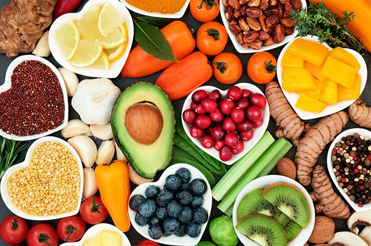

Tentang NutriTrack
NutriTrack adalah Pencatatan makanan dan nutrisi yang dirancang untuk membantu Anda mencapai tujuan kesehatan Anda.
NutriTrack, Anda dapat mencatat makanan yang Anda konsumsi, melacak asupan nutrisi harian Anda, dan melihat laporan mengenai pola makan Anda.